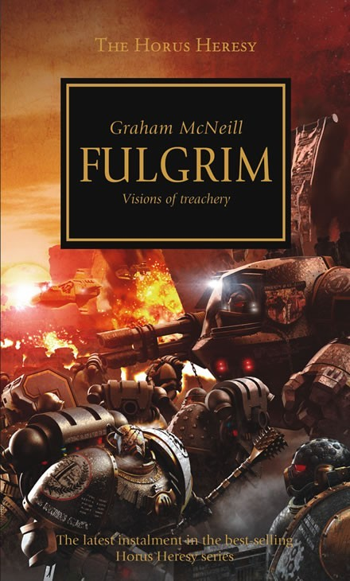

FULGRIM

Author: Graham McNeill
Format: Novel
As the Great Crusade draws to a close, Fulgrim and the Emperor’s Children pursue perfection under Horus’s command. On a new campaign, loyalties are tested and darker influences begin to pull at the Legion’s ideals.
Introduction reviewed against Black Library’s description on 2026-09-27. The publisher page may contain spoilers.
Publication facts: publisher source, checked 2026-09-26.
Open this work in the interactive Archive to track reading progress and explore related works.
Take the three-question memory check for this work. The quiz contains story spoilers.